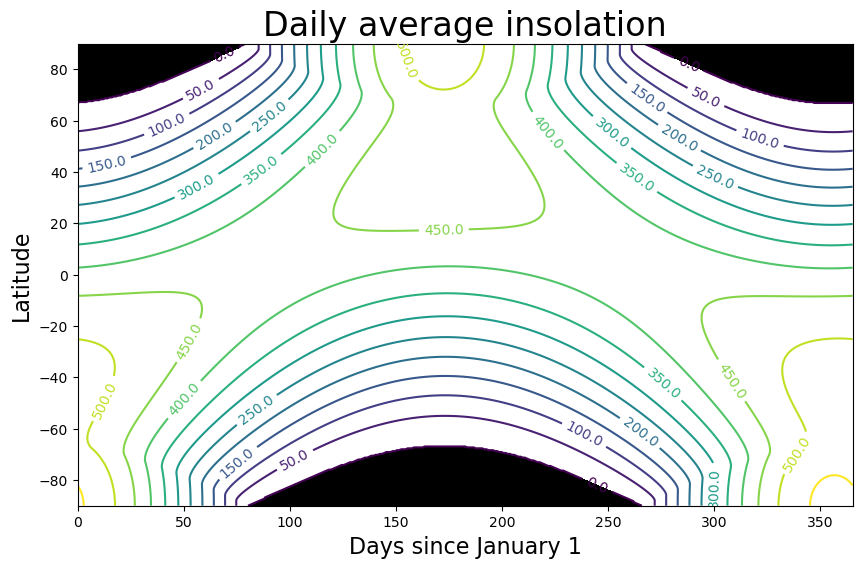
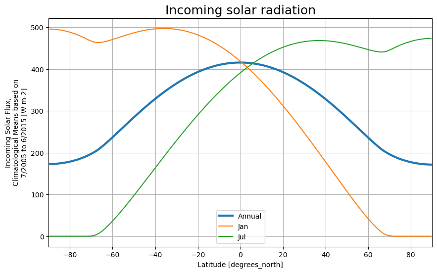
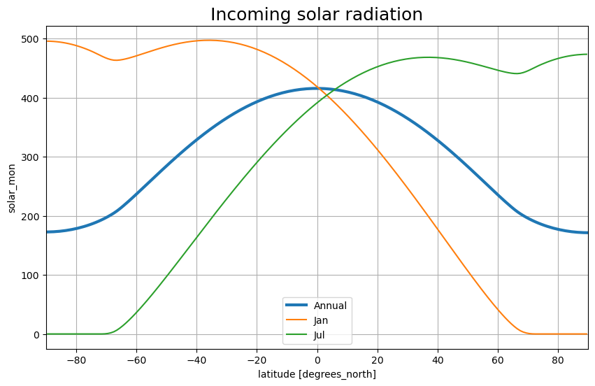
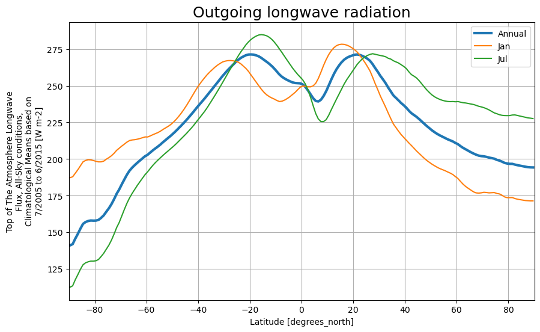
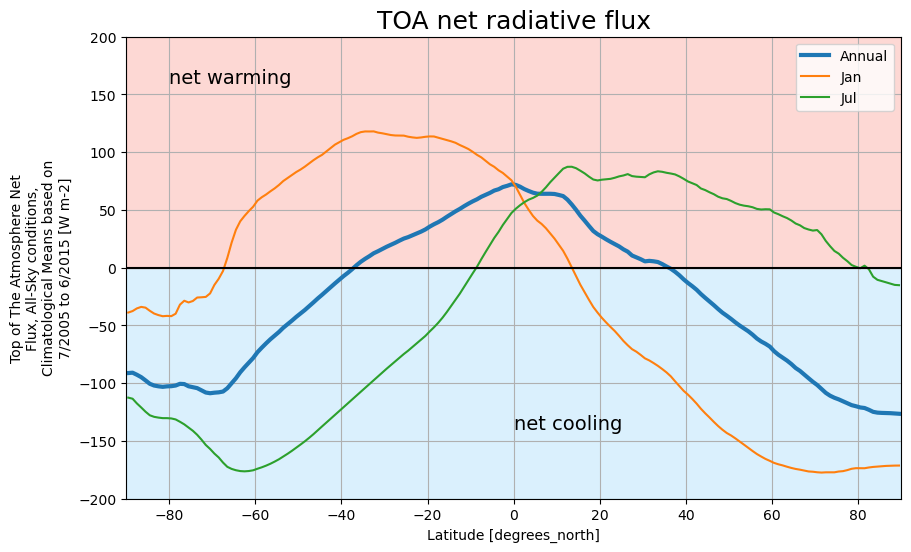

Earth’s radiation budget
Contents
1. Earth’s radiation budget#
… work in progress
import numpy as np
import matplotlib.pyplot as plt
import xarray as xr
Earth’s Radiation Budget#

Fig. 1.1 The global annual mean energy budget of Earth for the approximate period 2000–2010. All fluxes are in W m\(^{–2}\). Solar fluxes are in yellow and infrared fluxes in pink. The four flux quantities in purple-shaded boxes represent the principal components of the atmospheric energy balance. Source: Stephens et al. [2012]#
Incoming solar radiation#
Computing the incident sunlight hitting the Earth is a geometrical problem with a known solution so long as we know the details of the Earth’s orbit. For details, see this lecture in Brian Rose’s The Climate Laboratory
fsize = (10,6)
import climlab
lat = np.linspace( -90., 90., 500)
days = np.linspace(0, climlab.utils.constants.days_per_year, 365 )
Q = climlab.solar.insolation.daily_insolation( lat, days )
Downloading data from 'http://www.atmos.albany.edu/facstaff/brose/resources/climlab_data/absorptivity/abs_ems_factors_fastvx.c030508.nc' to file '/home/runner/.cache/pooch/61707eb16bd77eb262c3c7db3706b35d-abs_ems_factors_fastvx.c030508.nc'.
fig, ax = plt.subplots(figsize=fsize)
CS = ax.contour( days, lat, Q , levels = np.arange(0., 600., 50.) )
ax.clabel(CS, CS.levels, inline=True, fmt='%r', fontsize=10)
ax.set_xlabel('Days since January 1', fontsize=16 )
ax.set_ylabel('Latitude', fontsize=16 )
ax.set_title('Daily average insolation', fontsize=24 )
ax.contourf ( days, lat, Q, levels=[-1000., 0.], colors='k' );

CERES EBAF data#
The CERES-EBAF product is described by Kato et al. [2018].
ceres = xr.open_dataset('../data/CERES_EBAF.nc')
ceres
<xarray.Dataset>
Dimensions: (lat: 180, ctime: 12, sc1: 12, sc2: 2)
Coordinates:
* lat (lat) float32 -89.5 -88.5 -87.5 -86.5 ... 87.5 88.5 89.5
* ctime (ctime) int32 1 2 3 4 5 6 7 8 9 10 11 12
Dimensions without coordinates: sc1, sc2
Data variables:
climatology_bounds (sc1, sc2) int32 2453737 2457055 ... 2453706 2457024
ztoa_sw_all_clim (ctime, lat) float32 347.3 345.4 340.3 ... 0.0 0.0 0.0
ztoa_lw_all_clim (ctime, lat) float32 187.3 187.9 190.2 ... 171.1 171.0
ztoa_net_all_clim (ctime, lat) float32 -38.92 -37.64 ... -171.1 -171.0
zsolar_clim (ctime, lat) float32 495.7 495.6 495.3 ... 0.0 0.0 0.0
Attributes:
title: CERES EBAF (Energy Balanced and Filled) TOA Fluxes. Monthly...
institution: NASA/LaRC (Langley Research Center) Hampton, Va
Conventions: CF-1.4
comment: Climatology from 07/2005 to 06/2015
version: Edition 4.1; Release Date May 28, 2019
DOI: 10.5067/TERRA-AQUA/CERES/EBAF-TOA_L3B004.1The monthly mean insolation as represented in CERES data#
months = ['Jan', 'Feb', 'Mar', 'Apr', 'May', 'Jun', 'Jul', 'Aug', 'Sep', 'Oct', 'Nov', 'Dec']
fig, ax = plt.subplots(figsize=fsize)
levels = np.arange(0., 600., 50.)
CS = ax.contour(months, ceres.lat, ceres.zsolar_clim.transpose(), levels=levels)
ax.clabel(CS, CS.levels, inline=True, fontsize=10)
<a list of 32 text.Text objects>
def annual_line_plot(da, title=''):
'''A little helper function to make some nice line plots of annual means compared to January and July'''
fig = plt.figure(figsize=fsize)
da.mean(dim='ctime').plot(label='Annual', linewidth=3)
for month_index in [0,6]:
da.isel(ctime=month_index).plot(label=months[month_index])
plt.legend()
plt.xlim([-90,90])
plt.grid()
plt.title(title, fontsize=18);
annual_line_plot(ceres.zsolar_clim, title='Incoming solar radiation')

Albedo#
The ratio of outgoing to incoming SW radiation:
# masking out points where the insolation is near zero
albedo = ceres.ztoa_sw_all_clim / ceres.zsolar_clim.where(ceres.zsolar_clim > 10.)
annual_line_plot(albedo, title='TOA albedo')
plt.ylabel('Albedo');

Absorbed shortwave radiation#
The residual between what comes in and what goes out:
absorbedSW = ceres.zsolar_clim - ceres.ztoa_sw_all_clim
annual_line_plot(absorbedSW, title='Absorbed shortwave flux')
plt.ylabel('flux (W m$^{-2}$)')
Text(0, 0.5, 'flux (W m$^{-2}$)')
Outgoing longwave radiation#
annual_line_plot(ceres.ztoa_lw_all_clim, title='Outgoing longwave radiation')

Net radiation at TOA#
annual_line_plot(ceres.ztoa_net_all_clim, title='TOA net radiative flux')
ylim = [-200, 200]
plt.plot([-90,90], [0,0], color='black')
plt.fill_between([-90,90], [ylim[0], ylim[0]], alpha=0.3, color='lightskyblue')
plt.text(-80, 160, 'net warming', fontsize=14)
plt.fill_between([-90,90], [ylim[1], ylim[1]], alpha=0.3, color='salmon')
plt.text(0, -140, 'net cooling', fontsize=14)
plt.ylim(ylim);
